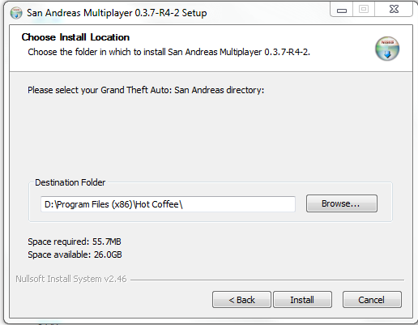
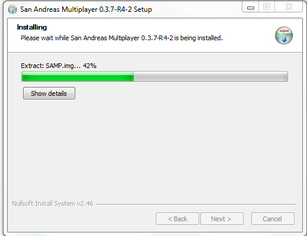
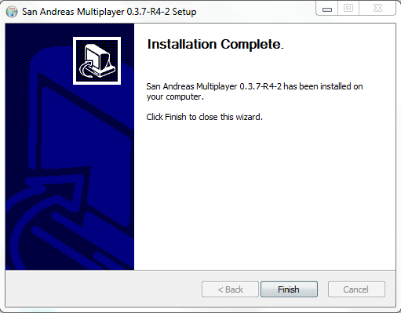
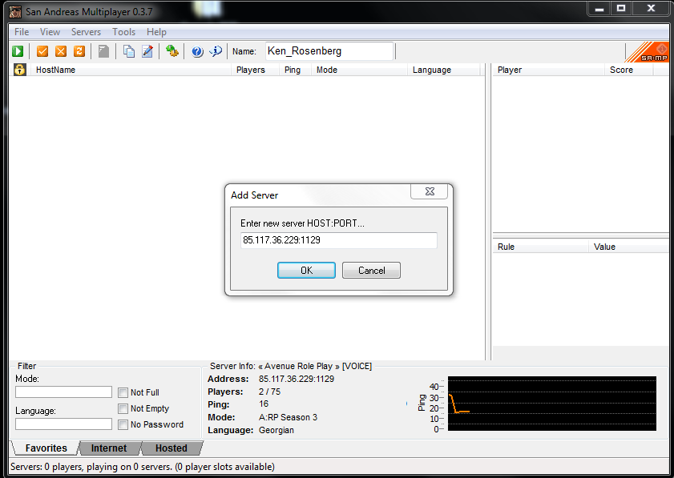

პირველ რიგში აუცილებელია გეწეროთ GTA SanAndreas, რომლის გადმოსაწერი ღილაკიც ქვემოთ არის მოცემული.
შემდეგ ვიწერთ SA:MP 0.3.7 ვერსიას და...

ვაწვებით ღილაკ "Browses..." და ვუთითებთ იმ ლოკაციას სადაც გვაქვს ჩაწერილი ჩვენი GTA

ველოდებით სულ რამოდენიმე წამი...

ჩაწერა დასრულებულია, დააჭირეთ ღილაკს
Finish

ამოაკოპირეთ IP მისამართი
85.117.36.229:1129 და ჩაამატეთ Favorites სერვერ ლისტში..